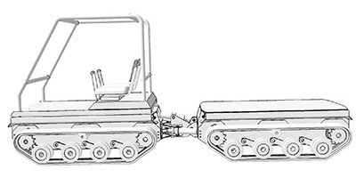

Типаж тракторной техники: основные принципы построения
Трактор – это самоходная машина (обычно колесная или гусеничная), предназначенная для приведения в действие прицепного или навесного оборудования и рабочих органов с целью выполнения разнообразных технологических операций. Совокупность трактора с прицепным, навесным, полунавесным и стационарным оборудованием называется машинно-тракторным агрегатом (МТА).
Тракторы используются во всех отраслях народного хозяйства (сельское, лесное, коммунальное хозяйства, промышленное и гражданское строительство и т.д.) с целью механизации тяжелого физического труда и повышения его производительности. Для удовлетворения широкого спектра задач народного хозяйства необходим целый ряд моделей тракторной техники – от мала до велика.
В основе формирования такого (дискретного) ряда тракторной техники лежит рационально обоснованная система, позволяющая покрыть весь (непрерывный) спектр задач с максимальной эффективностью. Основные принципы этой системы заключаются в следующем:
1. Минимальное число моделей тракторов, обоснованное по экономическим и техническим соображениям;
2. Полное покрытие нужд народного хозяйства по номинальным тяговым усилиям и скоростям тракторов;
3. Обеспечение максимальной производительности МТА и других критериев эффективности.
С учетом всех этих требований принят основной классификационный параметр (номинальное тяговое усилие трактора) по которому в соответствии с ГОСТ 27021-86 выполняется градация всей тракторной техники на тяговые классы. Как показала практика, именно этот параметр считается наиболее стабильным (не существенно зависит от типа движителя и свойств грунта) и определяет возможности агрегатирования трактора с машинами-орудиями.
Под номинальным тяговым усилием сельскохозяйственных и лесохозяйственных тракторов принимается усилие, которое они развивают на стерне средней плотности и при нормальной влажности почвы (от 8 до 18%) в зоне максимального значения тягового КПД при эксплуатационной массе, предусмотренной технической характеристикой (для колесных тракторов с балластным грузом) при предельных значениях буксования.
Номинальным тяговым усилием промышленного трактора считается наибольшее тяговое усилие, которое он может реализовать на плотном сухом грунте. Так как эта величина взаимосвязана с конструкционной массой трактора, то тяговый класс промышленных тракторов иногда определяют по ее диапазону (см. табл. 2).
Сельскохозяйственные и лесохозяйственные тракторы делят на десять тяговых классов, а промышленные тракторы - на восемь (табл. 1 и 2).
Таблица 1. Тяговые классы сельскохозяйственных и лесохозяйственных тракторов
| Тяговый класс | Номинальное тяговое усилие, кН | Тяговый класс | Номинальное тяговое усилие, кН |
|---|---|---|---|
| 0.2 | От 1,8 до 5,4 | 3 | Св. 27 до 36 |
| 0.6 | Св. 5,4 до 8,1 | 4 | Св. 36 до 45 |
| 0.9 | Св. 8,1 до 12,6 | 5 | Св. 45 до 54 |
| 1.4 | Св. 12,6 до 18 | 6 | Св. 54 до 72 |
| 2 | Св. 18 до 27 | 8 | Св. 72 до 108 |
Таблица 2. Тяговые классы промышленных тракторов
| Тяговый класс | Номинальное тяговое усилие, кН | Тяговый класс | Номинальное тяговое усилие, кН |
|---|---|---|---|
| 2 | От 4 до 6 | 25 | Св. 25 до 35 |
| 6 | Св. 6 до 10 | 35 | Св. 35 до 50 |
| 10 | Св. 10 до 15 | 50 | Св. 50 до 70 |
| 15 | Св. 15 до 25 | 70 | Св. 70 до 90 |
Приведенная выше рационально обоснованная (с точки зрения техники, технологии производства, экономики и эксплуатации) градация тракторов по тяговому классу называется типажом тракторов.
Тяговый класс – это совокупность моделей тракторов, имеющих тяговое усилие в заданных пределах.
Модель трактора – конкретное конструктивное исполнение трактора. В рамках единого производства выделяют базовую модель, на основании которой создают модификации.
Модификация – это модель, относящаяся к тому же классу, что и базовая, имеющая с последней широкую степень унификации. Модификации создаются для более эффективного выполнения специфических операций либо для работы в специфических условиях. Модификация может иметь, в отличие от базовой модели измененную компоновку, дополнительные механизмы. Что позволяет быстро и с наименьшими затратами на подготовку производства создавать необходимый трактор.
Типы и основные параметры малогабаритных тракторов устанавливаются в ГОСТ 28523-90 «Мобильные средства малой механизации сельскохозяйственных работ. ТРАКТОРЫ МАЛОГАБАРИТНЫЕ. Типы и основные параметры»
Таблица 3. Типы и основные параметры МГТ по ГОСТ 28523-90
| Типы МГТ | Конструкционная масса, кг +15% |
Номинальная мощность двигателя, кВт | Максимальная скорость, км·ч |
Ширина колеи, мм, не более |
Агротехнический просвет, мм, не менее | |
|---|---|---|---|---|---|---|
| рабочая | транспортн. | |||||
| МГТ одноосные (мотоблоки) | ||||||
|
Легкий |
До 70 | До 3 | 6 | 15* | 700 | 130 |
|
Средний |
До 100 | До 5 | 150 | |||
|
Тяжелый |
Св. 100 | Св. 5 | 300 | |||
|
МГТ двухосные |
||||||
|
Легкий |
До 500 | До 10 | 6 | 15 | 800 | 300 |
|
Средний |
До 650 | До 14 | 6 | 25 | 800 | 300 |
|
Тяжелый |
Св. 650 | Св. 14 до 16 | 6 | 25 | 1200 | 300 |
Раньше типаж выполнял плановые функции, обязательные для заводов-изготовителей. В настоящее время в условиях рыночной экономики типаж имеет рекомендательный характер. Перспективные разработки тракторной техники по-прежнему отвечают требованиям высокого технического уровня, конкурентоспособности, повышению производительности МТА, улучшению условий труда тракториста и совершенствованию экологических качеств.
Материалы для скачивания
Каталог навесного оборудования
Прайс-лист
Дополнительные опции
Скачать каталог >>
Каталог запчастей
Примеры комплектаций
Доп. предложения
Версии и комплектации тракторов ELF

Гусеничное вездеходное шасси «B»
Подробнее
Гусеничное транспортное шасси «C»
ПодробнееКолесное многоцелевое шасси «D»
ПодробнееДвухзвенные гусеничные шасси «АхА», «ВхВ», «CxC»
Подробнее